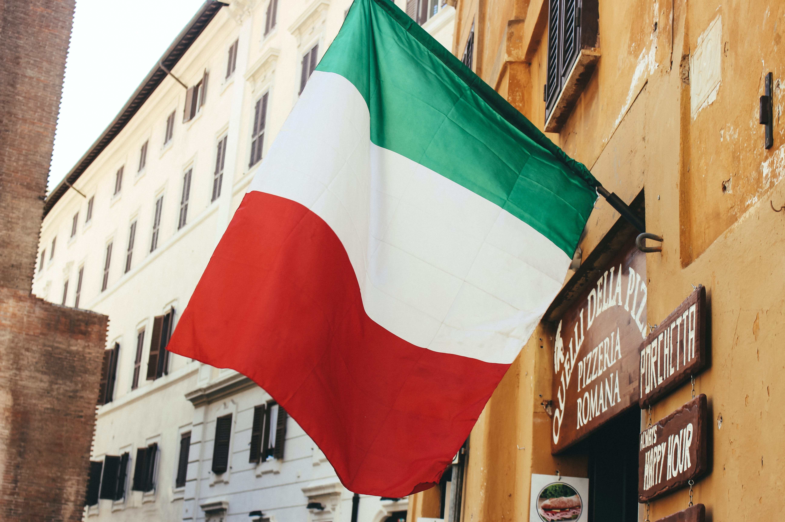

HISTORY

ABOUT and CULTURE
- Florence was founded as a Roman military colony in the 1st century BCE.
- This city was the capital of Italy from 1865 to 1870.
- The most famous of the city’s cultural giants include Leonardo da Vinci, Michelangelo, Dante, Machiavelli, Galileo, and its most-renowned rulers, generations of the Medici family.
- Italian culture is steeped in the arts, family, architecture, music and food.
- Italians have frequent family gatherings and enjoy spending time with those in their family.
- About 93% of the Italian population speaks Italian as native language, according to the BBC. There are a number of dialects of the language spoken in the country, including Sardinian, Friulian, Neapolitan, Sicilian, Ligurian, Piedmontese, Venetian and Calabrian.
GEOGRAPHY
- The city is located about 145 miles northwest of Rome.
- Florence is surrounded by gently rolling hills that are covered with villas and farms, vineyards, and orchards.
- Borders the countries of France, Switzerland, Austria, and Slovenia to the north, all of which have influenced Italian culture.